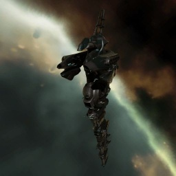

Myrmidon

Тип корабля: Линейный крейсер
Государство/Организация: Gallente
Примерная стоимость: 53.500.000 ISK
Описание
Чтобы предотвратить бессмысленные жертвы среди пилотов-сорвиголов, жаждущих сразиться с противником, командование флота Федерации поручило конструкторским бюро разработать проект корабля, исподволь поощряющего осторожность в бою. По сравнению с «Брутиксом» новый линейный крейсер получился гораздо более крепким — главный акцент его создатели сделали на обеспечении высокой боевой живучести. Благодаря огромному количеству разъёмов высокой и средней мощности, равно как и вместительным отсекам для дронов, в бою «мирмидоны» неспешно и уверенно пробиваются сквозь вражеский строй, оставляя за собой лишь медленно остывающие остовы.
Характеристики
Корпус
Запас прочности корпуса: 4.750 ед.
Вместимость грузового отсека: 400 м^3
Объем отсека для дронов: 200 м^3
Пропускная способность канала телеуправления: 100 Мбит/с
Масса: 12.700.000 кг
Занимает объем: 270.000,0 м^3 (15.000,0 м^3 в разобранном виде)
Влияние инертности конструкции: 0,7x
Сопротивление корпуса ЭМ-урону: 33 %
Сопротивление корпуса термальному урону: 33 %
Сопротивление корпуса кинетическому урону: 33 %
Сопротивление корпуса фугасному урону: 33 %
Броня
Запас прочности брони: 4.500 ед.
Сопротивление брони ЭМ-урону: 50 %
Сопротивление брони термальному урону: 35 %
Сопротивление брони кинетическому урону: 35 %
Сопротивление брони фугасному урону: 10 %
Щит
Запас прочности щита: 3.500 ед.
Влияние на время регенерации щитов: 23 минут и 20 секунд
Сопротивление щита ЭМ-урону: 0 %
Сопротивление щита термальному урону: 20 %
Сопротивление щита кинетическому урону: 40 %
Сопротивление щита фугасному урону: 50 %
Сопротивление средствам РЭП
Сопротивление накопителя нейтрализирующему воздействию: 0 %
Сопротивление воздействию генератору стазис-поля: 0 %
Сопротивление воздействию помех на наводку вооружения: 0 %
Накопитель энергии
Емкость накопителя: 2.900,0 ГДж
Время востановления заряда: 12 минут и 5 секунд
Целеуказания
Максимальная дальность захвата цели: 55 км
Максимальное количество захваченных целей: 7
Радиус сигнатуры: 305 м
Разрешающая способность систем захвата цели: 200 мм
Эффективность радарной системы: -
Эффективность магнитнометрической системы: 18 ед.
Эффективность гравиметрической системы: -
Эффективность ладарной системы: -
Двигательная установка
Максимальная скорость: 145 м/с
Скорость в варп-режиме: 3,5 а.е./с.
Служба оснащения
Мощность ЦПУ: 400,0 Тф
Мощность реактора: 1.050 МВт
Калибровка: 400 ед.
Точки монтажа орудийных установок: 5
Точки монтажа пусковых установок: -
Разъемы большой мощности: 5
Разъемы средней мощности: 5
Разъемы малой мощности: 6
Разъемы под установку тюнинг-модулей: 3